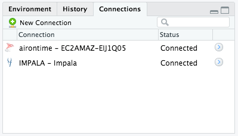

Connection history and existing connections

The Connections Pane shows you all the connections you have made to supported data sources, and lets you know which connections are currently active. RStudio supports multiple, simultaneous database connections. This history is specific to your user account and is stored privately in RStudio’s settings; you will see it in all your RStudio projects.
Connecting to a Database in R
In RStudio, there are two ways to connect to a database:
Write the connection code manually. See this article for more information: Connecting to a Database in R
Use the New Connection interface. The dialog lists all the connection types and drivers it can find on the system. See the next section for more information.
New Connection interface
The New Connection interface will list the following:

ODBC DSNs installed on your system If the
odbcpackage is installed, any system DSN (Data Source Name) you have installed will be listed. For more information, see Integrated security with DSN.Connections supplied by your administrator An administrator may put connection snippets into a folder to make them available to end users. If you are an administrator, see our page on RStudio Connection Snippet Files for more information.
ODBC drivers installed on your system If the
odbcpackage is installed, any ODBC driver you have installed on your system will be listed. The method for installing ODBC drivers varies by system. See our page on Setting up ODBC Drivers. Because the resulting connection code in the New Connection interface will have to be changed significantly, it may be better to write the connection code manually. See this article for more information: Connecting to a Database in R
Connections pane
After successfully connecting to a database using odbc, the Connections pane will do the following:
- Enable navigation by displaying an expandable list with the hierarchy of databases, schema, tables and fields
- Allow you to preview the top 1,000 rows of a table by clicking in the icon to the right of the table’s name
- Close the database connection by simply clicking on the corresponding button inside the pane